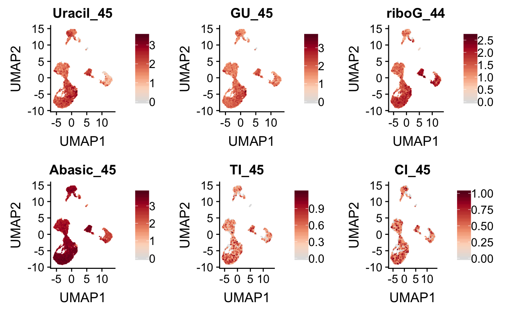
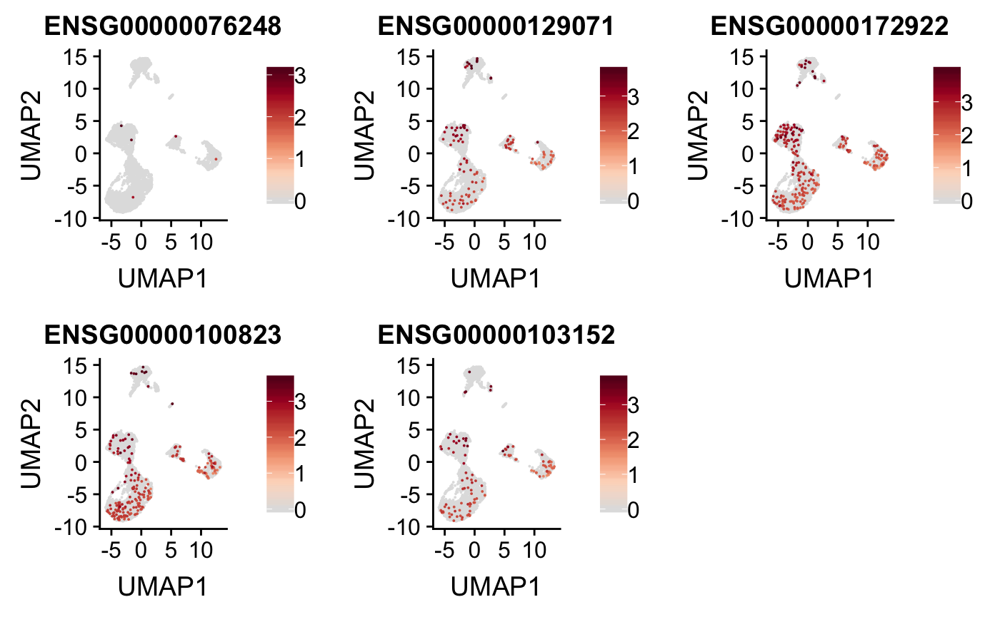

Peripheral mononuclear blood cells (PMBCs) from a healthy human were freshly prepared using Ficoll density separation. A suspension of ~10,000 cells in 30 microliters was prepared.
Prior to capture, 5 microliters of a solution of polyadenylated DNA hairpin repair substrates was added, containing:
Cells were emulsified and the reactions were incubated at 37 ˚C for 1 hour prior to continuing with a single-cell RNA sequencing prep.
library(scrunchy)
library(SingleCellExperiment)
# load mRNA UMI data
exp <- load_csv(scrunchy_data("pbmc.gene.matrix.csv.gz"))
# load haircut UMI data
fxn <- load_csv(scrunchy_data("pbmc.haircut.matrix.csv.gz"))
fce <- create_fce(exp, fxn)
fce <- normalize_counts(fce)
var_genes <- get_var_genes(fce, n_genes = 5000)
fce <- calc_pca(fce, n_pcs = 20, genes = var_genes)
fce <- calc_umap(fce, n_dims = 6)features <- c(
"Uracil_45",
"GU_45",
"riboG_44",
"Abasic_45",
"TI_45",
"CI_45"
)
plot_cells(fce, features)
mRNA expression of genes catalying known repair events.
library(tibble)
gene_features <- tribble(
~ensembl, ~common,
"ENSG00000076248", "UNG",
"ENSG00000129071", "MBD4",
"ENSG00000172922", "RNASEH2",
"ENSG00000100823", "APEX1",
"ENSG00000103152", "MPG"
)
knitr::kable(gene_features)| ensembl | common |
|---|---|
| ENSG00000076248 | UNG |
| ENSG00000129071 | MBD4 |
| ENSG00000172922 | RNASEH2 |
| ENSG00000100823 | APEX1 |
| ENSG00000103152 | MPG |
